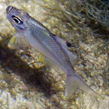
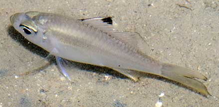

|
|
| fishes text index | photo index |
| Phylum Chordata > Subphylum Vertebrate > fishes |
| Asiatic glass perchlets Family Ambassidae updated Sep 2020
Where seen? Groups of these silvery fishes are frequently encountered in pools at low tide near seagrasses on many of our shores. Elsewhere, they are found in mangroves, estuaries and freshwater. They form groups during the day among mangrove roots and submerged plants. They disperse at night to feed. What are perchlets? Perchlets belong to Family Ambassidae (previously Family Chandidae). According to FishBase: The family has 8 genera and 41 species. They are found in Asia and Oceania and the Indo-west Pacific oceans. Features: To about 10cm. Body nearly transparent covered with thin scales. Thus it is sometimes called the Glassfish. Mouth is upturned with a projecting jaw and large eyes. A single dorsal fin, deeply notched before the last spine. These fishes are often seen in small groups. Kops' glass perchlet (Ambassis kopsii) are commonly seen often in a large group of many individuals. Those seen about 5-8cm, grows to about 10cm. Body silvery almost transparent. A distinctive blackish mark on the tip of the dorsal fin, which is deeply notched. Else seen in coastal and brackish waters, sometimes upstream in freshwater. It eats invertebrates. May be marketed fresh or dried and salted. Sometimes confused with Mojarras (Family Gerreidae) which have a single dorsal fin that is not deeply notched. More on how to tell apart small silvery fishes. |
 Mouth upturned, large eyes. Pulau Sekudu, Aug 04 |
 Kops' glass perchelet (Ambassis kopsii) Dorsal fin deeply notched, with blackish tip. Kusu Island, Apr 05 |
Often seen in large schools. Sungei Buloh Wetland Reserve, Nov 17 |
| What do they eat? They
eat tiny crustaceans such as ostracods and copepods, insects and sometimes
fishes. Human uses: Perchlets are eaten in some places and sold fresh or dried and salted. Some are used as an ingredient in making fish sauce. They are also used as bait. |
| Glass perchlets on Singapore shores |
On wildsingapore
flickr
|
| Other sightings on Singapore shores |
| Family
Ambassidae recorded for Singapore from Wee Y.C. and Peter K. L. Ng. 1994. A First Look at Biodiversity in Singapore. *Lim, Kelvin K. P. & Jeffrey K. Y. Low, 1998. A Guide to the Common Marine Fishes of Singapore. **from WORMS +Other additions (Singapore Biodiversity Records, etc)
|
Links
|